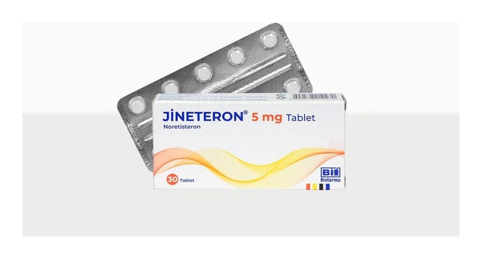

Jineteron 5 mg Tablet , 30 Adet

Ne için kullanılır
KT · Bölüm 1• JİNETERON, 30 tabletlik ambalajlarda bulunur ve beyaz-hemen hemen beyaz renkte, yuvarlak tabletlerdir. Her bir tablet etkin madde olarak 5 mg noretisteron içerir. JİNETERON laktoz monohidrat (sığır sütünden elde edilen) içerir. • Noretisteronun da aralarında bulunduğu progesteron grubu hormonlar, kadınlarda rahim iç tabakasındaki doku üzerine koruyucu ve kanamayı önleyici etki gösterirler. • JİNETERON, birkaç farklı durumda kullanılabilir: − düzensiz, ağrılı ve şiddetli adet dönemlerinde − rahim dışında rahim iç tabakası dokusunun bulunduğu durumlarda (endometriozis)
− adet öncesi rahatsızlıklarda (premenstruel sendrom-PMS veya premenstruel tansiyon- PMT) − adet kanamasının (menstruasyonun) ertelenmesinde